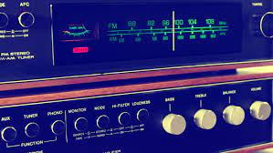

Welcome to Night Vale is a project of Night Vale Community Radio. We are a team of dedicated human beings (and station management) who use these radiowaves to discuss the news, traffic, the community calendar, horoscopes, advice, and, of course, the weather.
Just like Leonard before me, I have tried my best to make Night Vale Community Radio what it is today. Over the past few centuries, Night Vale Community Radio has been the most important thing to me. Well, in the past few years, it's been the second most important thing to me.